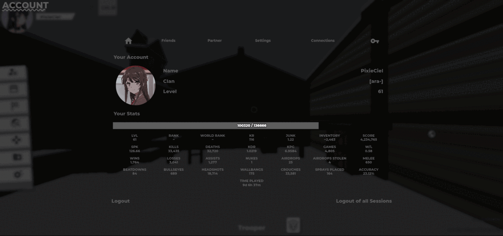

Hello There!
Welcome to my page. I use Blender and VS Code as my hobby, I also love making papercrafts and drawing. I'm Vietnamese. This website shows most of CSS that I have made.
Motivation
I started making CSS when I saw tae's YukiAim CSS. I don't know what to do that time, but thanks to the help of many people, I did it! I'm trying my best to get myself verified!
Thanks Rin ;-;#7349 for helping me and being with me on this journey!

CSS
SakuMai CSS
I made this css based on Sakurajima Mai with black-white theme for Saika-Forum.
Original: v79 css.

Genshin Impact Theme CSS
I love Genshin Impact so much that I did this css. It's the most elaborate css that I've ever made.
Hub